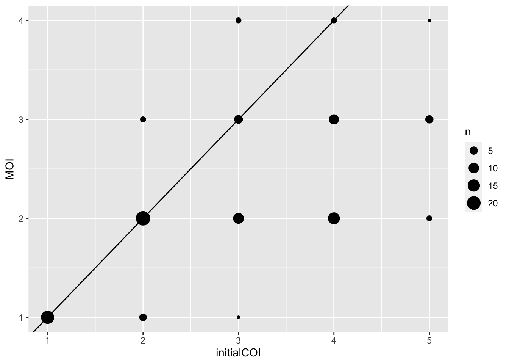
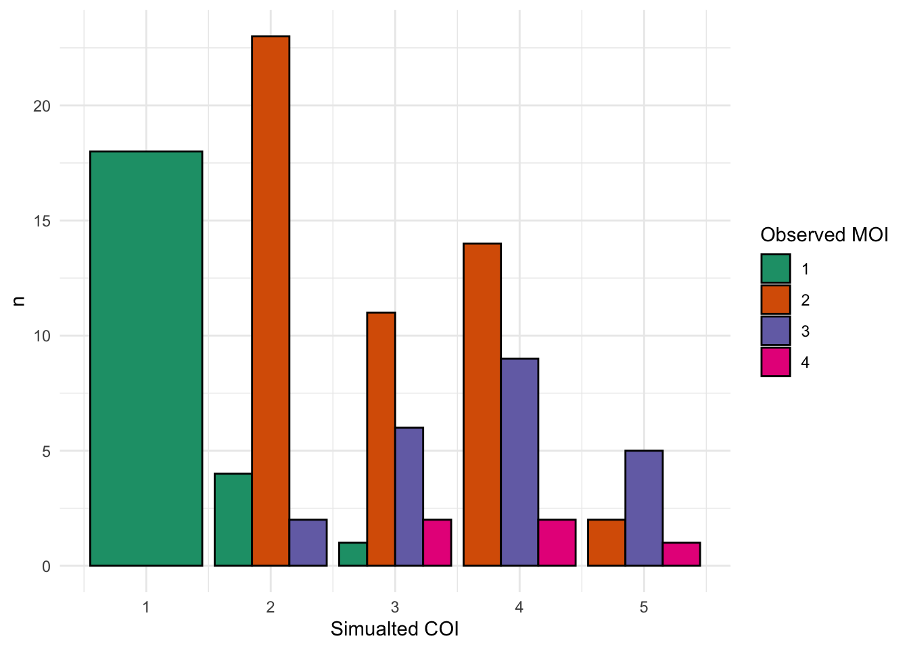

install.package("vcfR")Running MultiLociBiallelicModel on bialleic SNP data
The data
Data is generated by simulating sanger 100 barcode data for 100 samples with simulated COIs. main Data tab for further details.
R packages
Install R package vcfR for reading in vcf data.
library(tidyverse)
library(vcfR)Converting from VCF to input data
The input data to MultiLociBiallelicModel requires a table with sample ID in first column and then a column for each marker present with a 0 == homozygous reference, 1 == homozygous alt, and 2 for heterozygote. This only works on biallelic SNPS and therefore should be limited to only these SNPs.
# read in vcf
SpotMalariapfPanel_simData_sanger100 = read.vcfR("../../data/snp_barcode/SpotMalariapfPanel_simData_sanger100.vcf.gz")Scanning file to determine attributes.
File attributes:
meta lines: 76
header_line: 77
variant count: 100
column count: 109
Meta line 76 read in.
All meta lines processed.
gt matrix initialized.
Character matrix gt created.
Character matrix gt rows: 100
Character matrix gt cols: 109
skip: 0
nrows: 100
row_num: 0
Processed variant: 100
All variants processed# get the genotyping info
SpotMalariapfPanel_simData_sanger100_gt_tibble = SpotMalariapfPanel_simData_sanger100@gt %>%
as_tibble()
# get the genomic location info
SpotMalariapfPanel_simData_sanger100_fixDf = as_tibble(getFIX(SpotMalariapfPanel_simData_sanger100))
# get a vector of whether or not the SNPs are biallelic
snpIsBiallelic = is.biallelic(SpotMalariapfPanel_simData_sanger100)
# filter and combine the genotyping data
SpotMalariapfPanel_simData_sanger100_fixDf_filt = SpotMalariapfPanel_simData_sanger100_fixDf[snpIsBiallelic, ]
SpotMalariapfPanel_simData_sanger100_fixDf_filt_allgt = SpotMalariapfPanel_simData_sanger100_fixDf_filt %>%
bind_cols( SpotMalariapfPanel_simData_sanger100_gt_tibble[is.biallelic(SpotMalariapfPanel_simData_sanger100),]) %>%
gather(sample, call, 9:ncol(.)) %>%
mutate(FORMAT = strsplit(FORMAT, split = ":"),
call = strsplit(call, split = ":")) %>%
unnest(cols = c(FORMAT, call))
# get the genotyping calls
SpotMalariapfPanel_simData_sanger100_fixDf_filt_allgt_gt = SpotMalariapfPanel_simData_sanger100_fixDf_filt_allgt %>%
filter(FORMAT == "GT") %>%
mutate(varID = paste0(CHROM, "-", POS)) %>%
mutate(genotypeCall = case_when(
"0/0" == call ~ "0",
"1/1" == call ~ "1",
"0/1" == call ~ "2"
)) %>%
mutate(genotypeCall = as.numeric(genotypeCall))
# create the matrix for the input into the mle data
SpotMalariapfPanel_simData_sanger100_fixDf_filt_allgt_gt_sp = SpotMalariapfPanel_simData_sanger100_fixDf_filt_allgt_gt %>%
select(sample, varID, genotypeCall) %>%
rename(ID = sample) %>%
spread(varID, genotypeCall)The mle function is found within the R script supplied by the publication[@Tsoungui_Obama2022-gz]. The number of loci used in the publication was limited to about 10 and the function is unable to do large number of loci due to the size of the matrix that would have to be created so would advise limiting number of loci used, here doing the 6 most diverse loci by he.
# calculating he
SpotMalariapfPanel_simData_sanger100_fixDf_filt_allgt_gt_mod = SpotMalariapfPanel_simData_sanger100_fixDf_filt_allgt_gt %>%
mutate(genotypeCallExpand = case_when(
2 == genotypeCall ~ "ref/alt",
1 == genotypeCall ~ "alt",
0 == genotypeCall ~ "ref"
))
SpotMalariapfPanel_simData_sanger100_fixDf_filt_allgt_gt_mod_sel = SpotMalariapfPanel_simData_sanger100_fixDf_filt_allgt_gt_mod %>%
select(varID, genotypeCallExpand) %>%
mutate(genotypeCallExpand = strsplit(genotypeCallExpand, split = "/")) %>%
unnest(genotypeCallExpand) %>%
group_by(varID, genotypeCallExpand) %>%
count() %>%
group_by(varID) %>%
mutate(total = sum(n)) %>%
mutate(freq = n/total)
SpotMalariapfPanel_simData_sanger100_fixDf_filt_allgt_gt_mod_sel_he = SpotMalariapfPanel_simData_sanger100_fixDf_filt_allgt_gt_mod_sel %>%
group_by(varID) %>%
summarise(he = 1 - sum(freq^2)) %>%
arrange(desc(he))MLE
# select just the top 6 loci
SpotMalariapfPanel_simData_sanger100_fixDf_filt_allgt_gt_mod_sel_he_top = SpotMalariapfPanel_simData_sanger100_fixDf_filt_allgt_gt_mod_sel_he %>%
head(n = 6)
# select out only the sample id and the varID
selCols = c("ID", SpotMalariapfPanel_simData_sanger100_fixDf_filt_allgt_gt_mod_sel_he_top$varID)
inputToMLE = SpotMalariapfPanel_simData_sanger100_fixDf_filt_allgt_gt_sp[, selCols]
# load mle functions
source("SNPModel.R")
# Find the MLEs
est <- mle(inputToMLE, id=TRUE)prevalence
Several prevalences are called from the mle estimation results. These are the definition provided by the paper[@Tsoungui_Obama2022-gz].
- Unobservable prevalence
Since haplotype information is typically unavailable from molecular assays, haplotypes are per se not observable in molecular samples. To emphasize this fact we call the probability that a haplotype occurs in an infection “unobservable prevalence.”
- Conditional prevalence
Because of ambiguity of haplotype information in multiple infections, it is impossible to identify the number of samples containing haplotype h in a dataset. In practice, often only unambiguous samples are considered, to determine prevalence. Here, we derive the corresponding quantity in the underlying framework, i.e., the prevalence of haplotype h, conditioned on observing only unambiguous data. The quantity is referred to as “conditional prevalence.”
- Relative prevalence
Due to unobservable information, a statistical model is required to obtain estimates for frequencies. However, in practice, “ad-hoc” estimates are popular if statistical methods are not available. Frequency estimates can be obtained, by first disregarding all ambiguous observations, calculate the empirically observed unambiguous prevalence of all haplotypes, and finally normalizing them - here we refer to this as the “relative unambiguous prevalence.”
# Estimate prevalence
## Unobservable prevalence
unobsprev <- estunobsprev(est)
unobsprev_df = tibble(
haplotype = dimnames(unobsprev)[[2]],
unobsprevalence = c(unobsprev)
)
## Conditional prevalence
condprev <- estcondprev(est)
condprev_df = tibble(
haplotype = dimnames(condprev)[[2]],
condprevalence = c(condprev)
)
## Relative prevalence
relprev <- estrelprev(inputToMLE, id=TRUE)
relprev_df = tibble(
haplotype = dimnames(relprev)[[2]],
relprevalence = c(relprev)
)
prevalences = full_join(
unobsprev_df,
condprev_df
) %>%
full_join(relprev_df) %>%
arrange(desc(unobsprevalence))Joining with `by = join_by(haplotype)`
Joining with `by = join_by(haplotype)`DT::datatable(prevalences)Sample MOI calls
Using the mle estimation results combined with the haplotype calls for the sample there are functions provided for making MOI estimates based on what’s the most probable MOI. The function samplwiseMOI gives you a list of probabilities for a range of MOIs and returns the most the probable MOI.
# convert to matrix to make it easier to provide the haplotype call to the function
inputToMLE_mat = as.matrix(inputToMLE[, 2:ncol(inputToMLE)])
rownames(inputToMLE_mat) = inputToMLE$ID
allSampleMOIs = tibble()
# iterate over each sample by row and get an estimate of the MOI for each sample by providing the haplotype call for that sample
for (row in 1:nrow(inputToMLE_mat)) {
# estimate MOI probabilites
currentSampleMOI = samplwiseMOI(inputToMLE_mat[row, ], est)
# gathering
allSampleMOIs = bind_rows(allSampleMOIs,
tibble(sample = rownames(inputToMLE_mat)[row],
MOI = currentSampleMOI$MOI))
}
DT::datatable(allSampleMOIs)Since these samples are simualted, the known COI for the sample is known so can compare simulated MOI(COI) vs determined MOI by MultiLociBiallelicModel.
simCOI = readr::read_tsv("../../data/snp_barcode/SpotMalariapfPanel_simData_sanger100_simCOIs.tab.txt") %>%
rename(sample = Patient) %>%
left_join(allSampleMOIs)Rows: 100 Columns: 2
── Column specification ────────────────────────────────────────────────────────
Delimiter: "\t"
chr (1): Patient
dbl (1): initialCOI
ℹ Use `spec()` to retrieve the full column specification for this data.
ℹ Specify the column types or set `show_col_types = FALSE` to quiet this message.
Joining with `by = join_by(sample)`ggplot(simCOI) +
geom_count(aes(x = initialCOI,
y = MOI)) +
geom_abline(intercept = 0, slope = 1)
simCOI_sum = simCOI %>%
group_by(initialCOI, MOI) %>%
count()
ggplot(simCOI_sum) +
geom_col(aes(x = initialCOI, y = n, fill = factor(MOI)), color = "black", position = "dodge") +
scale_fill_brewer("Observed MOI", palette = "Dark2") +
theme_minimal() +
labs(x = "Simualted COI")